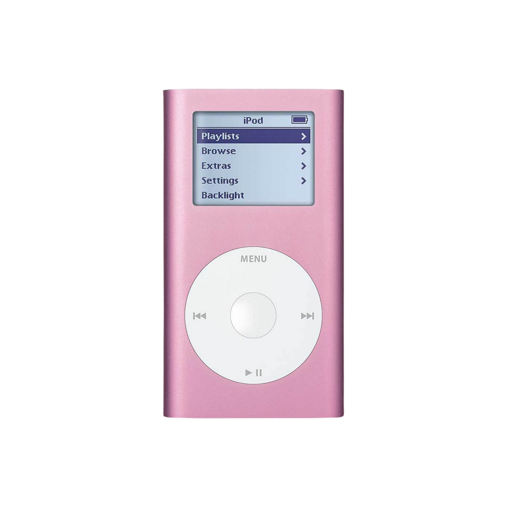

Articles
What does it take to run an all women…, girl uninterrupted
On y était : Mary in the Junkyard, les troubadours folk-rock, à la Bellevilloise, by Rafael Bauduret Ibanez (Les Inrocks)
What does it mean to be ‘underground’ in 2026?, by Solomon PM (Dazed)
How music charts lost their lustre (The Guardian)
content I have been enjoying
/
all articles
/
playlists
/
who is pink iPod
